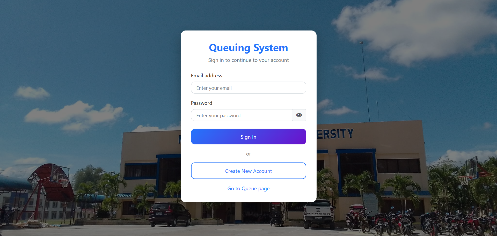
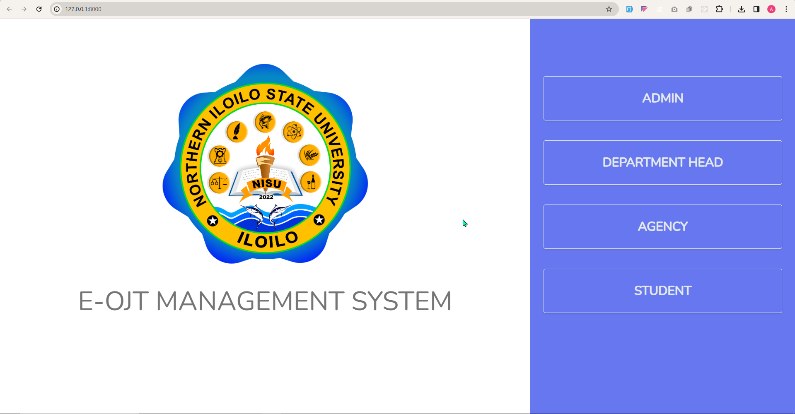
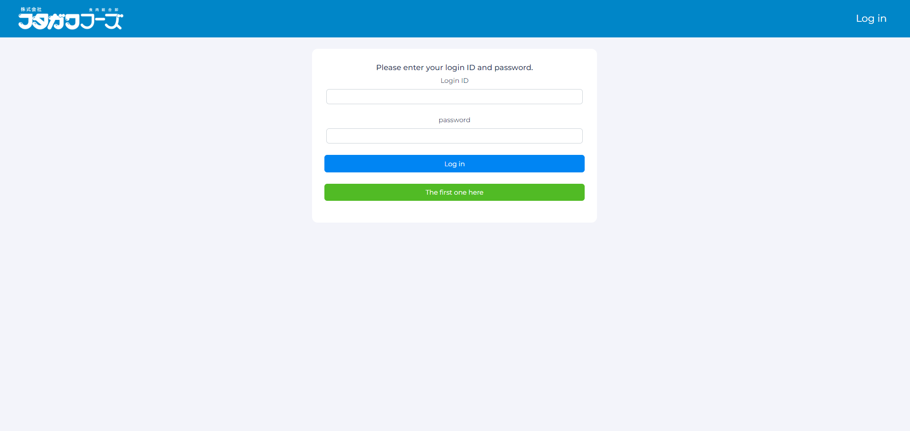
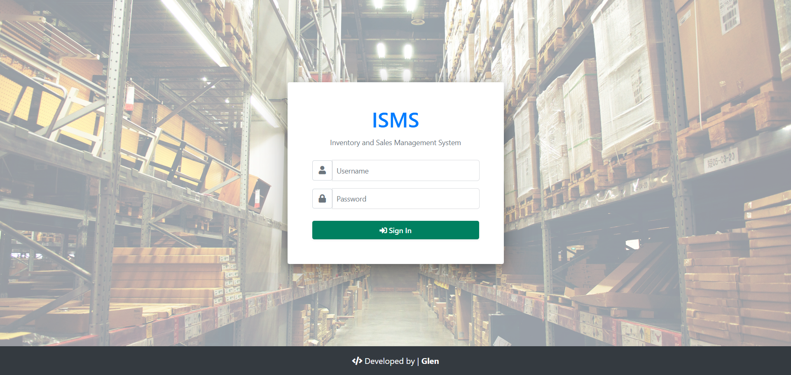

Projects
Contract Management System(CMS)

A system for managing contracts, tracking expiration dates, and enabling timely user actions before contracts expire.
NISU Lemery queuing System
An online university queuing system enabling account-based transactions and real-time queue tracking per office.
E-OJT Management System
A web-based platform for admins and department chairs to oversee deployed OJTs, monitor student tasks, and track progress in real time.
Futagawa Foods
A sales and inventory monitoring system for managing food products, tracking stock levels, and recording sales transactions in real time.
Business Permit License Management System
A business permit and licensing system with online applications, admin approval workflow, and QR code–generated permits linked to client data.
Inventory and Sales Management System
A business inventory and sales management system for tracking stock, sales transactions, and client credit records.